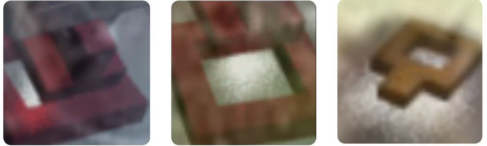
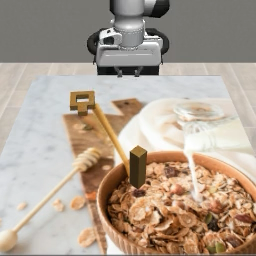
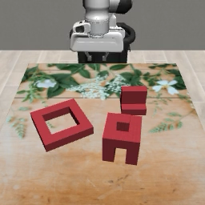
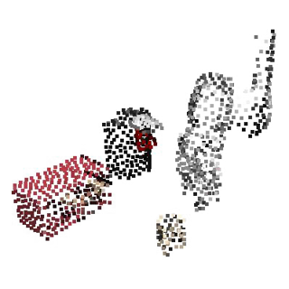
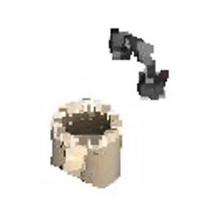

Attention for manipulation
Attention from action alone
Seeker CoRL 2026
Seeker learns where to look through action prediction alone, without spatial labels. The same attention guides zoom, background augmentation and 3D point filtering.
3×
real-robot success
60% versus 20% for the strongest baseline, averaged across lighting and background changes.
Attention-guided training images

New backgrounds at evaluation



